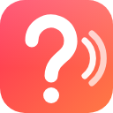

Settings. The defaults are sensible — you probably don't need to touch anything.
Tabs on these sites are never paused or muted, so PAUSE EVERYTHING can't hang up on a
human. One site per line. Subdomains are included automatically (zoom.us also covers
us05web.zoom.us).